<h2 id="part-1" class="slide-part-title">Part 1: The transiting planet population</h2> <div style="text-align: center; width: 100%;"><img src="https://i0.wp.com/www.hughosborn.co.uk/wp-content/uploads/2023/11/animation_post95_dark.gif" style="width: 100%; max-height: 620px; object-fit: contain; display: block; margin: 0 auto;" /></div> --- <h2 id="part-2" class="slide-part-title">Part 2: Transiting surveys</h2> ### Pixels to lightcurves <div style="text-align: center; width: 100%;"><p>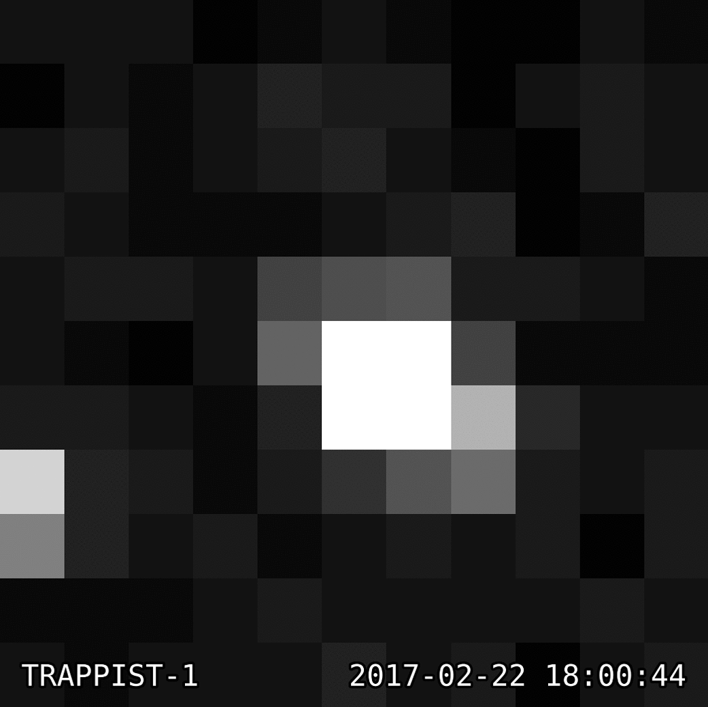</p></div> -v- ### Pixels to lightcurves #### Step 1) - Aperture photometry - Extract a **light curve** - the variation in brightness over time - This typically requires summing pixels within fixed "aperture" or pixel mask - We also need to subtract the **background** (i.e. remove signals present in all pixels) -v- ### Pixels to lightcurves <div style="text-align: center; width: 100%;"><p>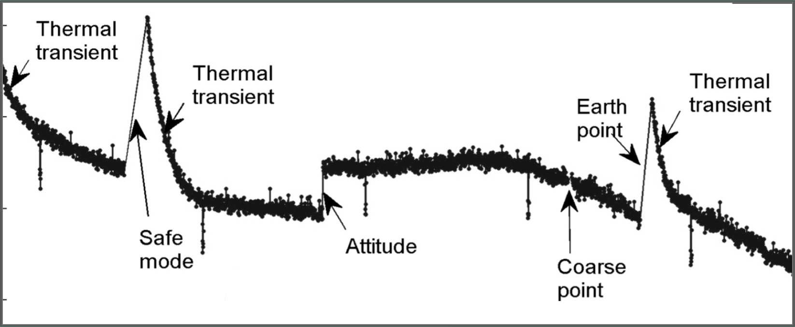</p></div> #### Step 2) - Decorrelation - Remove systematics (e.g. flux changes due to thermal changes, spacecraft motion, etc) - Done through **detrending** / **decorrelation** - i.e. removing any trends seen in flux which are well-correlated with other timeseries. -v- ### Pixels to lightcurves #### Step 2) - Decorrelation - Typical examples: - On-board temperature (or temperature effects such as PSF width) - Measured spacecraft motion - Measured lightcurves from comparison stars (average of many stars) #### Step 3) - Normalisation - Normalise such that median=1.0 - Normalise such that median=0.0. Scale is therefore variable (e.g. %, ppt, ppm) --- <h2 id="part-3" class="slide-part-title">Part 3: Examples of transit surveys/observations</h2> ## Ground-based surveys <div style="text-align: center; width: 100%;"><p>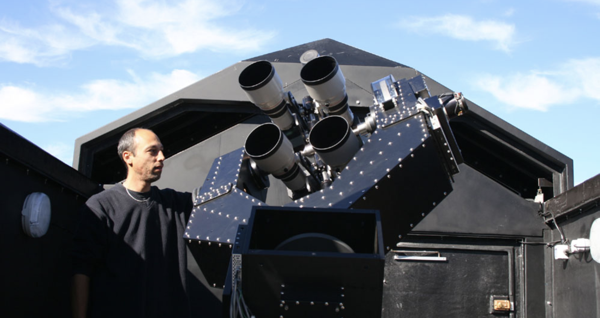</p></div> -v- ## Ground-based surveys - Cheap modified cameras able to detect short-period $\sim1$% dips on stars $6<V<12$ - Multiple examples: HAT (2003), TRES & WASP (both 2004), KELT (2006), etc. - Majority ($\sim$350) of hot Jupiters orbiting bright stars found this way -v- ## Kepler <div style="text-align: center; width: 100%;"><p>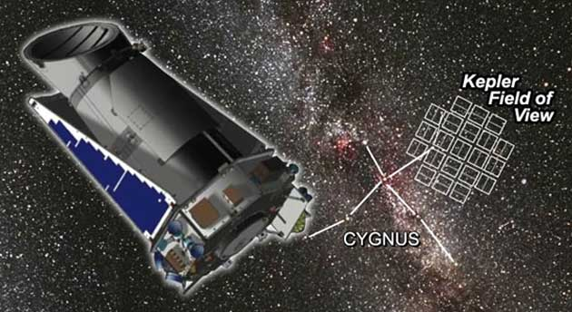</p></div> - First space telescope dedicated to transits (launch 2009) - NB: French **CoRoT** (2006) also found planets - 4-year mission designed to measure planetary occurrence rates - Capable of detecting planets from only a handful of ~100ppm transits -v- ## K2 <div style="text-align: center; width: 100%;"><p>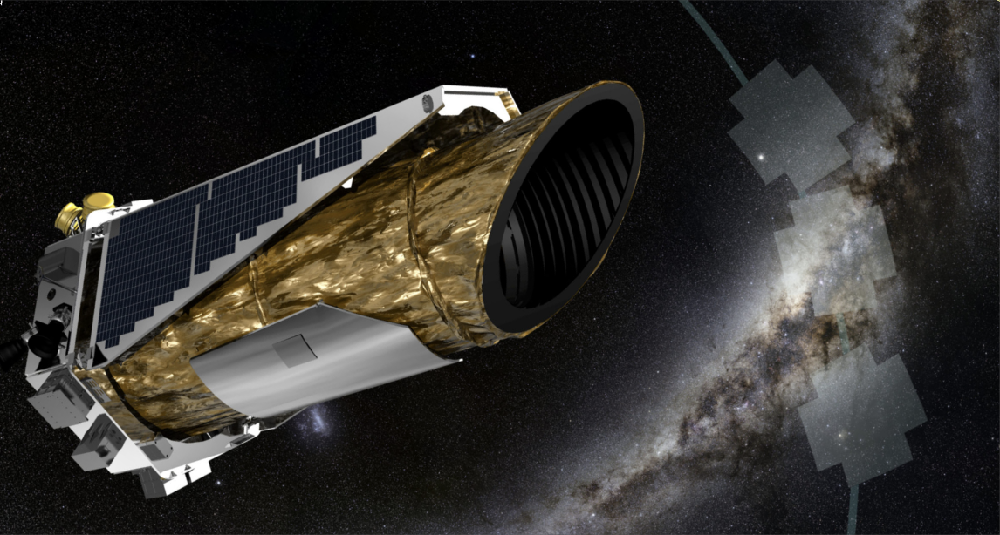</p></div> - Second Kepler mission after end of precise pointing - 19$\times$80d "Campaigns" in the ecliptic plane - Reduced precision and number of stars, but still able to detect hundreds of planets & candidates - Best pipeline uses pixel-level decorrelation - [everest](https://archive.stsci.edu/hlsp/everest) -v- ## TESS <div style="text-align: center; width: 100%;"><video src="https://svs.gsfc.nasa.gov/vis/a010000/a013200/a013238/13238_TESS_First_Year_Good.mp4" controls autoplay loop muted style="max-height: 450px; max-width: 100%; object-fit: contain; display: block; margin: 0 auto;"></video></div> -v- ## TESS - All-sky transit survey with four small 10cm lensed cameras - Unable to find earthlike planets around sunlike stars (but many around M-dwarfs) - Multiple pipelines, but SPOC pipeline `PDC_FLUX` is best -v- ## PLATO - ESA project launching early 2027 - 26$\times$12cm cameras, tiling the same patch of sky - Should be able to find transiting earthlike planets -v- ## Roman --- <h2 id="part-4" class="slide-part-title">Part 4: Geometry of a transit</h2> <img src="Animated_composite_of_2004_Venus_transit_images_pillars.gif" class="r-stretch" /> -v- ## Depth <div style="text-align: center; width: 100%;"><p>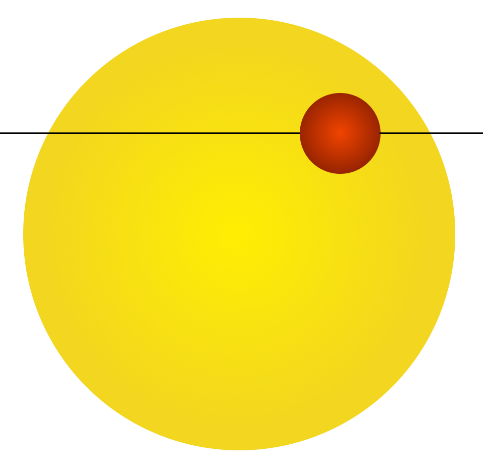</p></div> -v- ## Impact parameter <div style="text-align: center; width: 100%;"><p>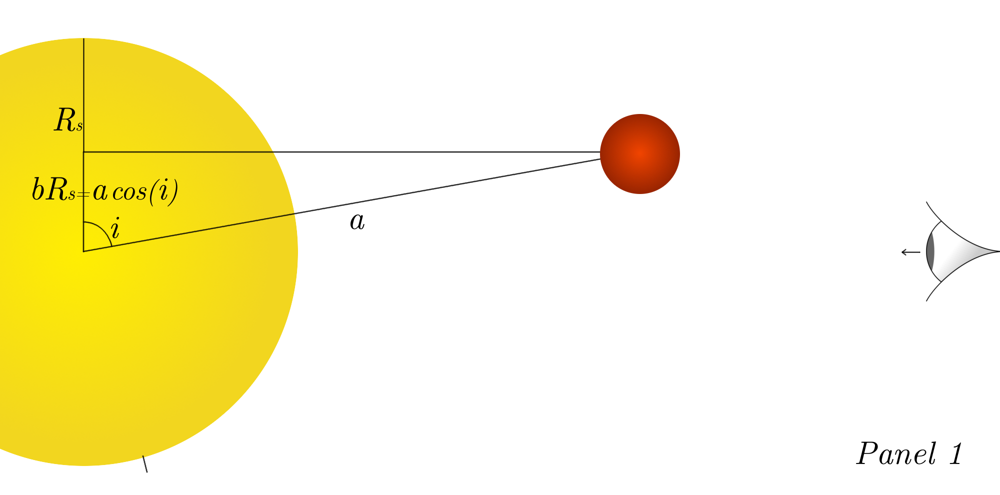</p></div> - Only exoplanets with specific inclination range can transit their stars -v- ## Transit duration (chord) <div style="text-align: center; width: 100%;"><p>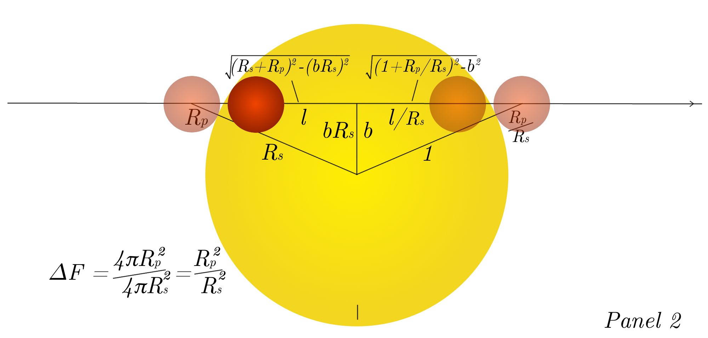</p></div> -v- ## Transit duration () <div style="text-align: center; width: 100%;"><p>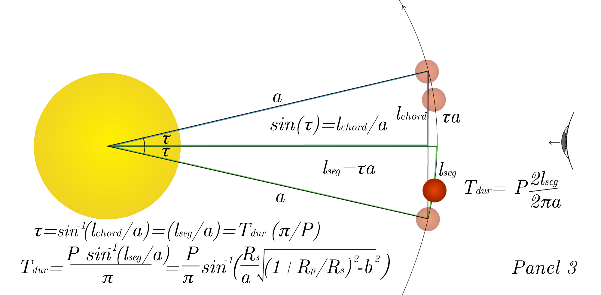</p></div> -v- ## Limb Darkening <div style="text-align: center; width: 100%;"><p>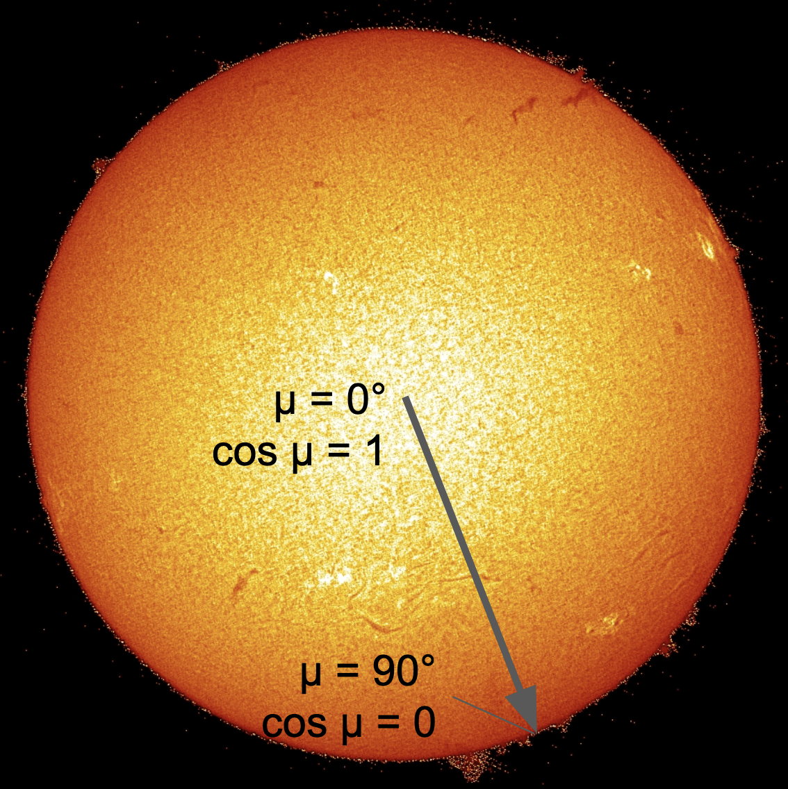</p></div> -v- ## Limb Darkening <div style="text-align: center; width: 100%;"><p>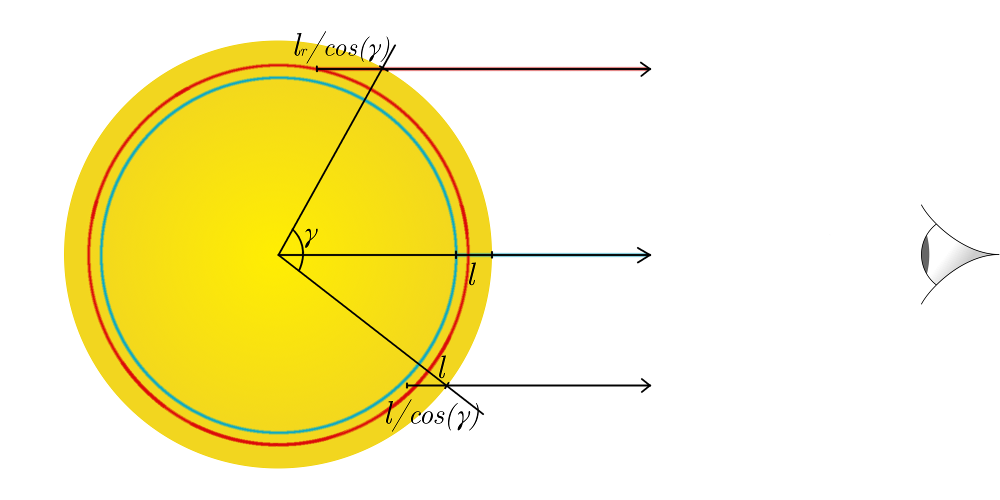</p></div> -v- ## Limb Darkening - Multiple "limb darkening laws" parameterises drop in flux $I/I_0$ $\cos{\mu}$ - Simplest: $\frac{I(\mu)}{I(0)} = 1 - a(1-\mu)$ - the linear law - Most common: $\frac{I(\mu)}{I(0)} = 1 - u_1 (1-\mu) - u_2 (1-\mu)^2$ - the quadratic law - Theoretical LD parameters exist for most filters from fitting stellar models (e.g. [for TESS](https://www.aanda.org/articles/aa/full_html/2017/04/aa29705-16/aa29705-16.html)) -v- ## Limb Darkening (Observed) <div style="text-align: center; width: 100%;"><p>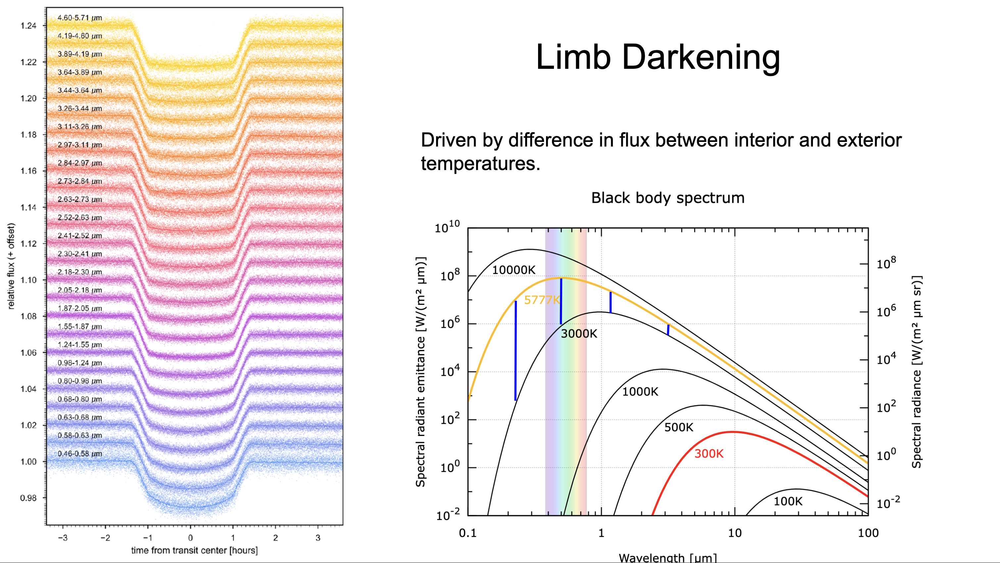</p></div> -v- ## Limb Darkening Approaches 1) Strong priors - Access the pre-computed tables of coefficients for a given bandpass as a function of stellar Teff & logg (Vizier, Claret et al) - Use a wider $\sigma$ than suggested by the table (0.1 & 0.2 for quadratic params $u_1$ & $u_2$, especially for cooler stars [Patel & Espinoza 2022](https://arxiv.org/abs/2203.05661)) 2) Uninformative priors - No assumptions using models. However, low-SNR transits will not constrain limb-darkening, and other parameters may be lower-precision. - In the case of quadratic parameters, reparameterise according to [Kipping 2014](https://arxiv.org/abs/1308.0009) --- <h2 id="part-5" class="slide-part-title">Part 5: False Positives</h2> <div style="text-align: center; width: 100%;"><p>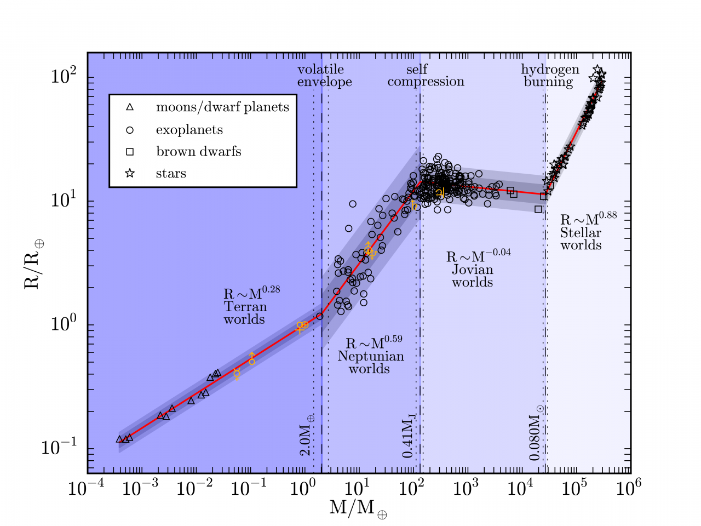</p></div> --- <h2 id="part-6" class="slide-part-title">Part 6: Exoplanet detection</h2> Exoplanets are (usually) extremely periodic. Therefore searches typically iterate through period/frequency space. -v- ## Packages for exoplanet detection - bls (e.g. [astropy.timeseries](https://docs.astropy.org/en/stable/timeseries/bls.html); see also [lightkurve docs](https://lightkurve.github.io/lightkurve/tutorials/3-science-examples/exoplanets-identifying-transiting-planet-signals.html)) - [GerBLS](https://gerbls.readthedocs.io/en/latest/) - 10-20x faster implementation of BLS - [transitleastsquares](https://transitleastsquares.readthedocs.io/en/latest/) - includes transit shape in search - [Nuance](https://nuance.readthedocs.io/en/latest/) - models both transits and trends/activity --- <h2 id="part-7" class="slide-part-title">Part 7: Stars, Trends & Systmatics</h2> ## Stellar noise <div style="text-align: center; width: 100%;"><p>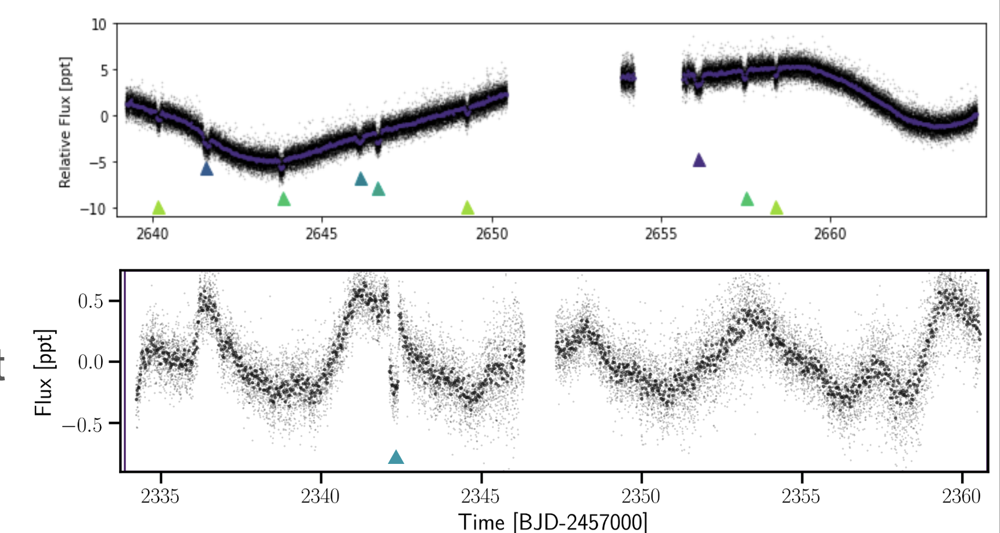</p></div> - Stars are not constant in flux. - We need to account for this variation, by filtering/subtracting it, or co-fitting it. -v- ## Modelling stellar noise - Common approaches: * **Filtering** (e.g. Savitsky-Golay, or median filter, implemented with e.g. astropy.timeseries or scipy.signal or wotan) * **Spline** (e.g. cubic bspline, implemented using e.g. scipy.interpolate) * **Local polynomials** around transits * **Gaussian Processes** (e.g. SHO, implemented with e.g. celerite or tinyGP) - But removing variability can change transit depth/shape! - Best to *mask* identified transits while filtering, or co-fit variability with transit model -v- ## Modelling stellar noise - GPs - A way to parameterise correlations with time (e.g. non- or quasi-periodic variability) - Covariance: the influence of past & future data on each point - Kernel: the mathematical function governing how each point is influenced by past/future data. - Hyperparameters: variable parameters governing the kernel (i.e. amplitude, timescale, etc) -v- ## Modelling stellar noise - GPs <div style="text-align: center; width: 100%;"><p>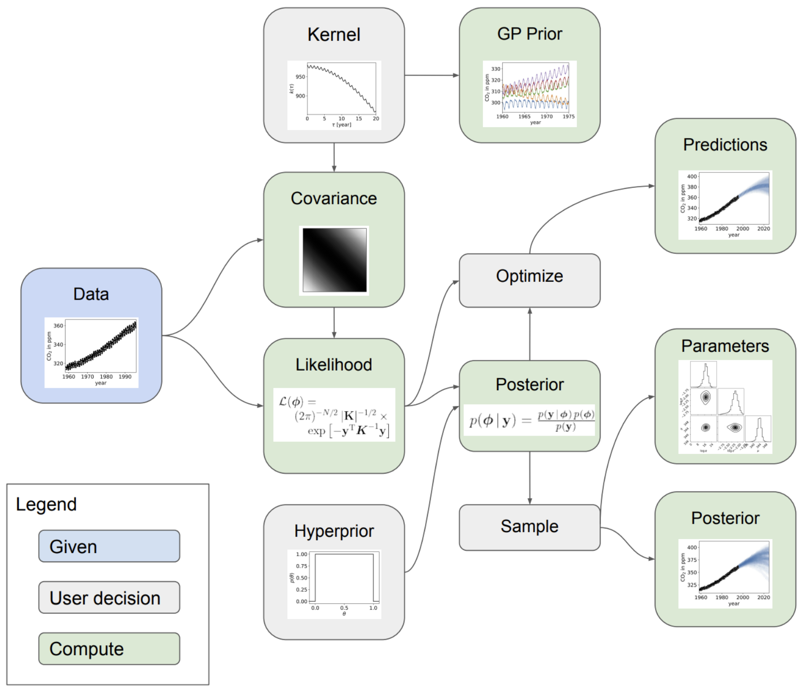</p></div> - From [Aigrain & Foreman-Mackey (2022)](https://arxiv.org/abs/2209.08940) --- <h2 id="part-8" class="slide-part-title">Part 8: Accessing Data</h2> # Accessing photometric data lightkurve --- <h2 id="part-9" class="slide-part-title">Part 9: Modelling transits</h2> #### Typical parameters: - Period $P$ - Transit time $t_0$ - Radius ratio $R_p/R_s$ - Impact parameter $b$ - Limb darkening #### Occasionally important: - Eccentricity $e$ & argument of periasteron $\omega$ -v- ## Packages for exoplanet transit modelling - [AllesFitter](https://www.allesfitter.com/) - Includes a GUI - [Exoplanet](https://docs.exoplanet.codes/en/latest/) - Python class-based. Interfaced with PyMC (HMC sampling) - [Juliet](https://juliet.readthedocs.io/en/latest/) - Script-based (YAML). Includes nested sampling. - [Batman](https://github.com/lkreidberg/batman) - Simple pythonic transit model. - [Pytransit](https://pytransit.readthedocs.io/en/latest/index.html) - Fast fortran back-end. Not very intuitive. --- # Project ideas! 1) Do Neptunes with 10<P<30d host any (undetected) close-in super-Earths? 2) Which TESS candidates also have archival K2 data, and does this confirm/reveal anything new? 3) Does TESS data reveal anything new about K2 or CoRoT candidates? Are parameters derived from TESS consistent? 3) Are the impact parameters of planets in multi-planet systems trend with distance due to mutual inclination? (NB avoid "compact" multis with TTVs)? 4) How does derived Limb Darkening parameters vary with stellar temperature for the brightest ~10 hot jupiters observed by TESS? 5) Does recent TESS data for TOIs with $P>250$d (or nan) in the Southern hemisphere help constrain their true periods 6) Can you fit a transit model to the secondary eclipses of ultra-hot jupiters (e.g. KELT-9), and what does this tell you about the planet? -v- ### Some constraints - TTVs mean fitting simple transit models to compact multi-planet systems (i.e. with period ratios <2.25x) fails. - It's probably not worth simply searching random stars for new planets, as all the "easy" candidates have been found. - But it's much more likely to find additional planets in systems with already-detected existing planets <!-- ## Other complications -v- Transit timing variations -v- Spot-crossing events -v- Stellar contamination -v- Atmospheric transmission --- ## How to model exoplanet transits-->